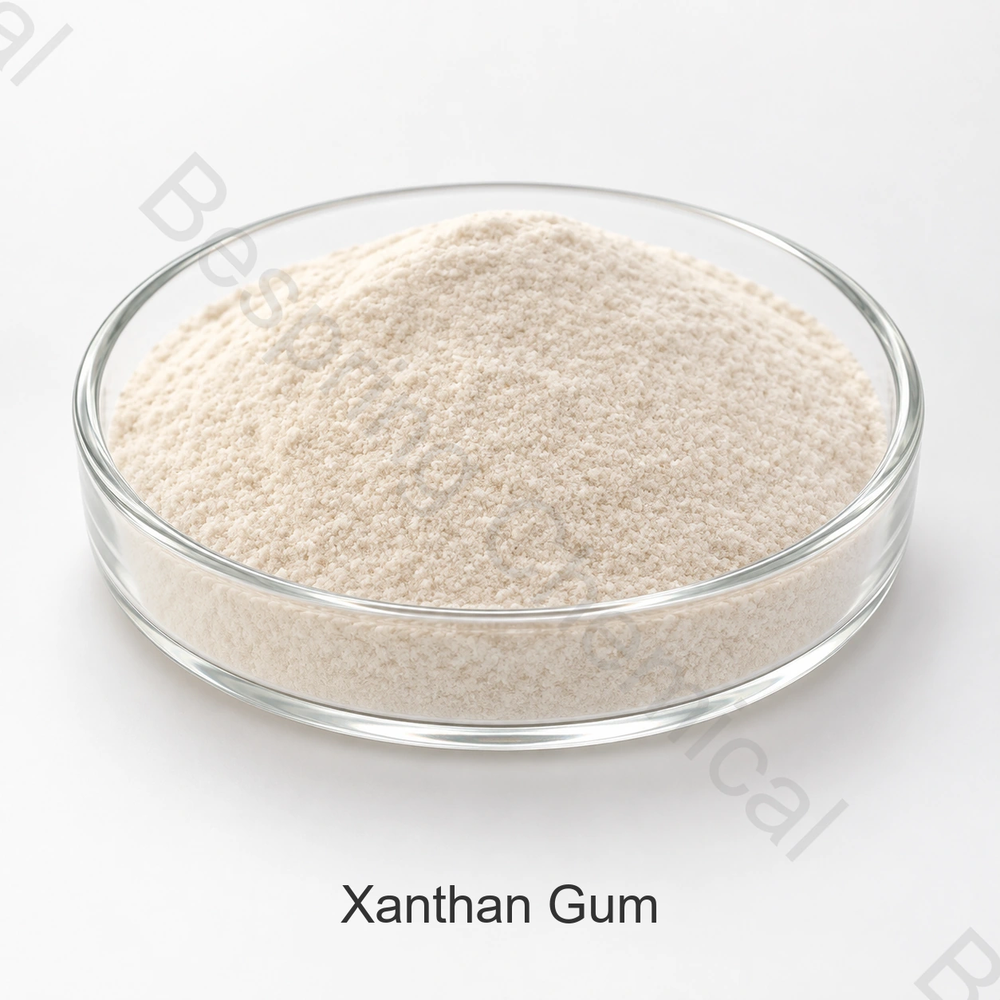

Fermentation hydrocolloid · E415 / INS 415 · CAS 11138-66-2
Food Grade Xanthan Gum
Source 80 or 200 mesh xanthan gum for thickening, suspension and stabilization. Select by viscosity method, dispersion behavior and finished-food rheology—not mesh number alone.
*Supplied commercial reference; confirm current source, method, packing and availability.

Rheology firstLow-shear body and high-shear flow are tested together
Particle choiceMesh is not an instant-grade claim
Method matchedViscosity needs concentration, medium, spindle and speed
Batch evidenceCurrent specification and COA on request
Product identity and function
What is food grade xanthan gum?
Xanthan gum is a high-molecular-weight polysaccharide produced by pure-culture fermentation of a carbohydrate with Xanthomonas campestris, then recovered with ethanol or isopropanol, dried and milled. FAO/WHO JECFA identifies it as INS 415 and CAS 11138-66-2.
In food systems it is evaluated as a thickener, stabilizer, emulsifier and foaming agent. Its practical value comes from building viscosity at low shear while flowing more readily under mixing, pumping or pouring. The actual curve depends on concentration, hydration, temperature and the complete formulation.
Particle engineering and hydration
80 mesh vs. 200 mesh xanthan gum
Mesh describes particle-size screening, not the full grade. It does not by itself prove viscosity, clarity, microbiological quality or easy dispersion.
Coarser option
80 mesh
Can be considered for general food processing where the validated addition method gives complete hydration.
Confirm the percentage passing the stated sieve—not only “≥80 mesh”
Measure hydration time under the customer's mixer and water chemistry
Check undissolved particles, final viscosity and batch repeatability
Finer option
200 mesh
Provides a finer powder, but finer particles can wet and hydrate rapidly at the surface, increasing lump risk when poorly dispersed.
Confirm the actual 200-mesh passing requirement
Assess dusting, feeding accuracy and agglomeration during addition
Do not market it as instant or easy-dispersing without grade evidence
Separate grade concept
Instant / easy-dispersing
These claims normally require a defined agglomeration or surface-treatment design plus a performance method. They cannot be inferred from 80 or 200 mesh.
Ask for treatment/composition disclosure relevant to labeling
Set a dispersion and hydration test in the real process
Verify full viscosity development after a stated time
Grade boundary: transparent-solution, rapid-hydration, low-dust, low-microbial or salt-tolerant grades are separate performance claims. Request a source-specific grade and evidence before using those descriptions.
Application-specific rheology
How xanthan gum is evaluated in food
These are technical trial paths, not universal use permissions or dosage recommendations. Confirm the destination-market food category and complete formulation.
Sauces, dressings and fillings
Target suspension and cling at rest with pour or pump flow under shear. Test yield behavior, mouthfeel, oil separation, acid/salt effects and viscosity recovery after processing.
Beverages and liquid nutrition
Screen particle suspension and phase stability without excessive ropiness. Record hydration order, clarity/turbidity, protein/mineral interactions, heat treatment and sediment over shelf life.
Gluten-free bakery and dough systems
Evaluate water binding and structure with starches, proteins and other gums. Measure dough handling, gas retention, bake loss, crumb texture and staling rather than assuming a universal replacement ratio.
Frozen and chilled foods
Assess water mobility, freeze-thaw stability, syneresis and texture through the intended temperature cycle. The stabilizer system and solids profile influence the result.
Why “high viscosity” is incompleteOne viscosity number measures one point under defined conditions. A useful approval also compares low- and high-shear behavior, time-dependent recovery, temperature and the actual food matrix.
Supplied data with method boundaries
Food grade xanthan gum reference specification
The values below reproduce Bespring's supplied commercial sheet. They are not a batch COA and do not establish JECFA, FCC or other compendial conformity without complete methods and all required criteria.
Xanthan gum — supplied commercial limits and qualification gaps
Test item
Supplied limit
Qualification note
Particle size
“≥80 mesh”; 80 and 200 mesh offered
Exact sieve, percentage passing and separate 200-mesh criterion are missing
Loss on drying
≤13.00%
Stricter numerically than JECFA ≤15%; confirm 105°C / 2.5 h method
pH
6.0–8.0
Solution concentration, water and temperature are not stated
Ash
≤15.00%
Stricter numerically than JECFA ≤16% after drying
Shear value
≥6.50
Calculation and test conditions are required
Viscosity
1,200–1,700 mPa·s
Require sample concentration, medium, hydration, temperature, instrument, spindle and speed
Pyruvic acid
≥1.5%
Matches the JECFA minimum numerically; confirm method
Total nitrogen
≤1.5%
Matches JECFA maximum numerically
Heavy metals
≤20 ppm
Legacy aggregate test; not a substitute for named elemental limits
Lead
≤2 mg/kg
Matches JECFA maximum numerically
Total plate count
≤2,000 CFU/g
Stricter numerically than JECFA ≤5,000 CFU/g
Coliforms
Not detected in 5 g
Not equivalent to JECFA's E. coli criterion without the stated organism/method
Yeasts and moulds
≤500 CFU/g
Matches JECFA maximum numerically
Salmonella
Not detected in 10 g
Confirm method and destination-standard sampling plan
JECFA reference
JECFA additionally covers identity, carbon-dioxide assay, residual ethanol/isopropanol and E. coli. Those fields are absent from the supplied commercial table.
Do not claim full JECFA conformity from numerical overlap. Obtain a current signed specification with test methods, residual solvents, identity/assay fields and a representative COA for the offered grade.
Prevent incomplete hydration
Dispersion and processing trial
Most apparent “low viscosity” failures begin with addition and hydration, not necessarily the xanthan polymer itself.
1
Define the test medium
Record batch size, water temperature and hardness, pH, salts, sugars, proteins, oils and other hydrocolloids.
2
Create particle separation
Add at the point of adequate agitation or pre-disperse by an approved dry blend/oil-slurry route. Avoid dumping powder onto a quiet surface.
3
Allow controlled hydration
Fix addition rate, mixer type, speed, time and ingredient order. High sugar or salt concentration can delay water access and full hydration.
4
Measure the relevant curve
Compare viscosity at defined shear rates, flow after pumping/pouring, suspension at rest and recovery after shear.
5
Validate the process and shelf
Repeat heat, homogenization, filling, freeze-thaw and storage conditions; track separation, syneresis, texture and sensory acceptance.
6
Lock the receiving method
Translate the successful trial into agreed mesh distribution, viscosity method, microbiological limits and batch acceptance criteria.
Supplied commercial references
Packing and container planning
Loading differs by particle option and pallet choice on the supplied sheet. Reconfirm bag construction, dimensions, pallet pattern and legal payload for every route.
80 mesh20 MT without pallets18 MT with pallets per reference 20GP200 mesh18 MT without pallets16 MT with pallets per reference 20GPPacking25 kg bagPaper bag or customer requirement; confirm liner and labelMOQ500 kg referenceAvailability, sample and lead time confirmed per RFQ
Certificates: the supplied sheet lists Kosher, Halal and ISO. Verify current certificates for the exact grade, manufacturer/site, certificate owner, scope and validity period before using them in approval or marketing.
Storage and handling
Keep xanthan gum dry and free-flowing
EnvironmentThe supplied guidance states cool, dry, ventilated storage below 30°C and away from direct sunlight and heat.
PackagingKeep bags sealed and protected from humidity, rain, contamination, puncture and pest exposure.
Powder handlingControl airborne dust and follow the current SDS, food hygiene and site personal-protection procedures.
Buyer questions
Food grade xanthan gum FAQ
Is 200 mesh xanthan gum always easier to disperse than 80 mesh?
No. Finer powder can hydrate faster but can also form surface-hydrated lumps when added too quickly or with insufficient agitation. Easy-dispersing or instant performance requires a defined grade and a validated dispersion test; mesh alone is insufficient.
What information must accompany a xanthan gum viscosity result?
At minimum, specify sample concentration, water or salt medium, hydration procedure and time, temperature, viscometer, spindle, speed or shear rate, and reading time. A value without these conditions is not suitable for supplier comparison.
Does xanthan gum form a gel by itself?
It primarily builds a viscous, shear-thinning solution rather than a firm standalone gel. JECFA uses interaction with carob/locust bean gum as an identity test; actual texture with other hydrocolloids must be validated in the food system.
Does the supplied table prove JECFA compliance?
No. Some limits match or are numerically tighter, but methods are missing and the table omits JECFA identity/assay, residual-solvent and E. coli fields. Request a complete source-specific specification and COA.
What should a xanthan gum RFQ include?
State food grade, 80/200 mesh or dispersion requirement, application, viscosity method and target, microbiological limits, packing, quantity, destination, pallet preference, Incoterm and required certificates.